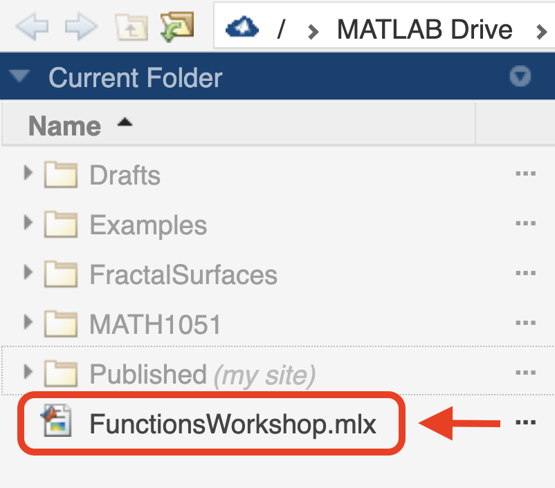

MATLAB
Live Scripts
* * *
Interactive activities for learning mathematics and MATLAB
How to open mlx files?
-
Download
First download the mlx that you need to your computer.
-
Sign up or Create an account in MATLAB Mathworks
You can do this here: matlab.mathworks.com/
-
Upload your file
Once you access MATLAB online, from the menu click on Upload and select the mlx file.
 The file will be uploaded to
your MATLAB Drive.
The file will be uploaded to
your MATLAB Drive. -
Open your file
Finally, on the left-side column locate your mlx file and double click to open it. 
That's it! 😃